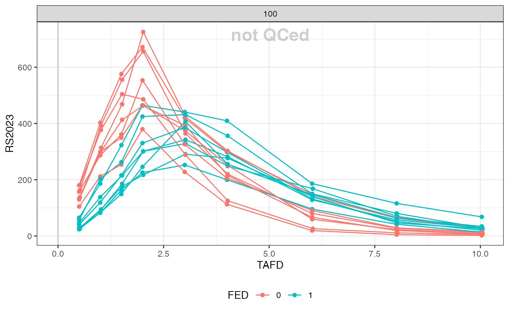

fe-study.Rmd
sdtm <- new_sdtm(sdtmsyn::sdtm_data_fe) %>%
add_analyte_mapping('RS2023', 'RS2023')
nif <- new_nif(sdtm) %>%
mutate(PERIOD = case_when(TRTDY> 7 ~ 2, .default = 1)) %>%
mutate(FED = case_match(str_sub(ACTARMCD, PERIOD, PERIOD), "B" ~ 1, "A" ~ 0))
head(nif, 5)
#> REF ID STUDYID USUBJID AGE SEX RACE HEIGHT WEIGHT BMI
#> 1 1 1 202400002 2024000021010002 42 1 WHITE 181.1 61.2 18.66012
#> 2 2 1 202400002 2024000021010002 42 1 WHITE 181.1 61.2 18.66012
#> 3 3 1 202400002 2024000021010002 42 1 WHITE 181.1 61.2 18.66012
#> 4 4 1 202400002 2024000021010002 42 1 WHITE 181.1 61.2 18.66012
#> 5 5 1 202400002 2024000021010002 42 1 WHITE 181.1 61.2 18.66012
#> DTC TIME NTIME TAFD TAD PCELTM EVID AMT ANALYTE CMT
#> 1 2000-12-28 09:34:00 0.000 0.0 -0.783 NA PT0H 0 0 RS2023 2
#> 2 2000-12-28 10:21:00 0.783 0.0 0.000 0.000 <NA> 1 100 RS2023 1
#> 3 2000-12-28 10:52:00 1.300 0.5 0.517 0.517 PT0.5H 0 0 RS2023 2
#> 4 2000-12-28 11:22:00 1.800 1.0 1.017 1.017 PT1H 0 0 RS2023 2
#> 5 2000-12-28 11:52:00 2.300 1.5 1.517 1.517 PT1.5H 0 0 RS2023 2
#> PARENT TRTDY METABOLITE DOSE DV MDV ACTARMCD
#> 1 RS2023 1 FALSE 100 0.0000 0 AB
#> 2 RS2023 1 FALSE 100 NA 1 AB
#> 3 RS2023 1 FALSE 100 137.9501 0 AB
#> 4 RS2023 1 FALSE 100 313.6047 0 AB
#> 5 RS2023 1 FALSE 100 468.4967 0 AB
#> IMPUTATION BL_CREAT BL_CRCL BL_RENAL PERIOD FED
#> 1 65.39559 95.7123 normal 1 0
#> 2 admin time imputed from PCRFTDTC 65.39559 95.7123 normal 1 0
#> 3 65.39559 95.7123 normal 1 0
#> 4 65.39559 95.7123 normal 1 0
#> 5 65.39559 95.7123 normal 1 0
summary(nif)
#> ----- NONMEM input file (NIF) object summary -----
#> Data from 16 subjects across one study:
#> STUDYID N
#> 202400002 16
#>
#> Males: 6, females: 10 (62.5%)
#>
#> Renal impairment class:
#> CLASS N
#> mild 2
#> normal 14
#>
#> Administered drugs:
#> RS2023
#>
#> Analytes:
#> RS2023
#>
#> Subjects per dose levels:
#> RS2023 N
#> 100 16
#>
#> 512 observations:
#> CMT ANALYTE N
#> 2 RS2023 512
#>
#> Subjects with dose reductions
#> RS2023
#> 0
#>
#> Treatment duration overview:
#> PARENT min max mean median
#> RS2023 2 2 2 2
plot(nif, group = "FED", mean = F, min_time = 0, max_time = 12, points = T,
admin = "RS2023") +
watermark()
#> Warning: The `group` argument of `plot()` is deprecated as of nif 0.50.1.
#> ℹ Please use the `color` argument instead.
#> This warning is displayed once every 8 hours.
#> Call `lifecycle::last_lifecycle_warnings()` to see where this warning was
#> generated.
#> Warning: Removed 16 rows containing missing values or values outside the scale range
#> (`geom_line()`).
#> Warning: Removed 16 rows containing missing values or values outside the scale range
#> (`geom_point()`).
nif %>%
nca("RS2023", group = "FED") %>%
nca_summary_table(group = "FED")
#> NCA: Group by FED
#> # A tibble: 2 × 8
#> # Groups: FED, DOSE [2]
#> FED DOSE n aucinf.obs auclast cmax half.life tmax
#> <fct> <dbl> <int> <chr> <chr> <chr> <chr> <chr>
#> 1 0 100 16 1785.11 (27) 1665.87 (25) 534.28 (18) 16.08 (32) 2 (1.5; 3.…
#> 2 1 100 16 1818.58 (26) 1658.07 (24) 358.89 (27) 15.98 (31) 3.01 (2; 3…